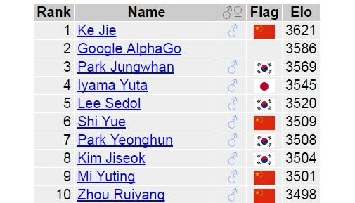
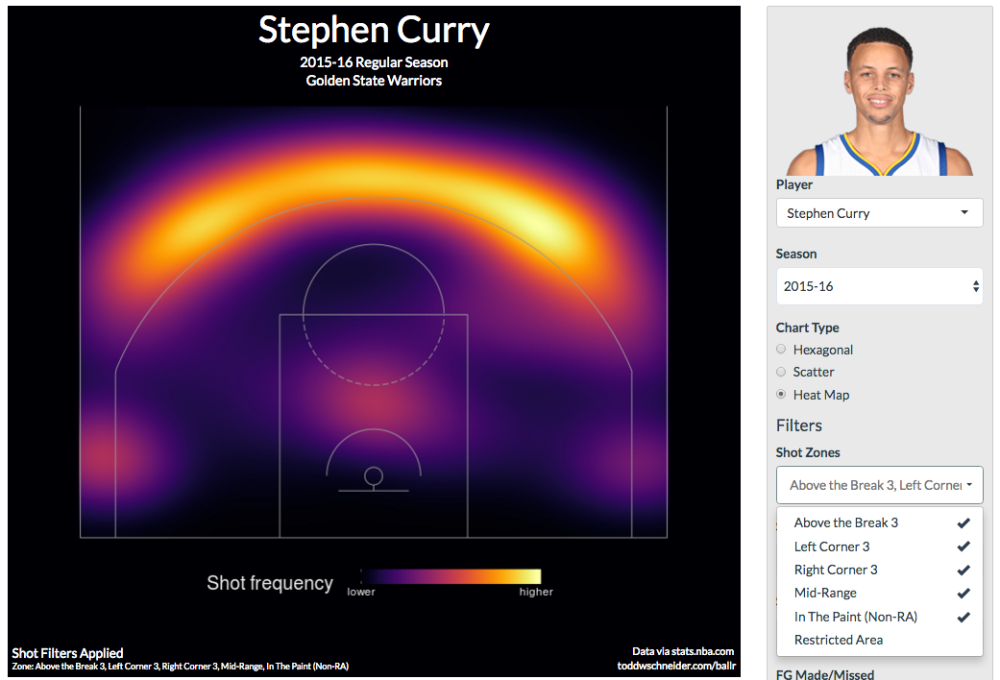

Hello World
CodeTengu Weekly 碼天狗週刊
CodeTengu Weekly 會在 GMT+8 時區的每個禮拜一早上 10:00 出刊，每一期會從目前的 curator 名單中選出三位來負責當期的內容，每一位 curator 各自負責不同的領域，如果你在這一期沒有看到自已感興趣的東西，說不定下一期就會有了。
你也可以瀏覽一下前幾期的內容，有價值的東西是不會過時的。
以下是目前的 curator 陣容：
- @vinta - I failed the Turing Test - 喜歡科幻小說，最近在讀「神經喚術士」
- @saiday - Imnotyourson - 捷運飲食推廣委員會
- @tzangms - Oceanic / 人生海海 - 衝動型購物
- @fukuball - ImFukuball - 機器學習好難
- @wancw - App、Server、Data，不知何時向 F* 邁進
- @adamp33 - 看棒球才是正職，副業是前端工程師
- @mingderwang
- @kako0507 - 熱愛嘗試新事物的前端工程師
- @chiahsien - Nelson
大家也可以 follow 一下 CodeTengu 的 Facebook、Twitter 或 GitHub，有很多 Weekly 看不到的內容。有任何建議或疑問也可以來 Gitter 聊一聊，歡迎亂入 👺
 @vinta
@vinta
10 Easy Steps to a Complete Understanding of SQL
作者用 SELECT 語句的各種子句組合為題，一步一步地講解了很多 SQL 的重要概念、細節（以及那些你從來沒有搞懂過的規則），非常值得一讀，推薦給被 ORM 養大、從來沒有好好學過 SQL 的你（指）。但是老實說，SQL 真的太深邃了啊，簡直就是 DSL 界的草薙素子（這是什麼爛比喻）。
延伸閱讀：
Easy PJAX for Django
最近 StreetVoice 又在緊鑼密鼓地改版中，因為網站有音樂播放的功能，為了讓切換頁面不會中斷播放，勢必得做成 Single Page Application (SPA)，但是完全在前端處理 URL routing 和所有的資料呈現實在是太阿雜了（而且其實沒有必要，至少對我們的產品來說），所以這個時候就輪到 PJAX 出場啦！
PJAX 是 History.pushState() + AJAX 的意思，效果就是你的每個頁面都可以繼續用後端 web framework 的 template rendering 的老方法，只是額外載入一個 jquery.pjax.js 和簡單的配置，你的整個網站馬上就變成一個 SPA，所有換頁（包含表單提交）之後的內容都會自動以 AJAX 的方式載入，你甚至不需要自己寫任何一行的 $.ajax()，讓大家從 JavaScript 的修羅道之中解脫了。
不過，如果是一些相對獨立的元件（例如 Player、Modal、Search Bar、留言列表）或是有大量 UI 操作的頁面，其實還是會直接用 React 啦。
Docker thumbor and remotecv
這個 Docker image 封裝了一個配置好的 thumbor server，thumbor 其實就是一個專門負責「縮圖」的 microservice（而且還有人臉辨識的功能！），真的是個好東西吶！
本機開發環境的配置不談（因為實在太簡單，一個 docker-compose.yml 就打死）；線上的正式環境的話，通常的使用情境會是：在你的 thumbor server（可以有很多台，然後用 nginx 做個 load balancer）之前擋一個 CDN，因為 CDN 就會把圖片 cache 住，所以你其實可以不用自己把縮圖存下來，如果還是會怕，那就 pre-warm 一下 CDN 好了。
另外再跟大家分享一個新聞：
Docker for Mac and Windows Beta: the simplest way to use Docker on your laptop
解決了很多在 Mac 上使用 Docker 會遇到的機八問題（尤其是 file change notification！），很讓人期待啊～
Building Simple Recommender Systems for Elasticsearch
用 Elasticsearch 來做一個簡單的推薦系統（更準確的說法應該是一個個人化的搜尋引擎）！對於一個技術棧本來就包含 ES 的我們來說，這個點子似乎不錯，畢竟 Elasticsearch 其實也就是一個 query 和 aggregation 功能特別強大的 NoSQL 資料庫。
雖然它的 Query DSL 在「可讀性」這件事情上就是一個徹底的悲劇。
延伸閱讀：
 @tzangms
@tzangms
How to Hire a Product Manager
時常聽到 PM 跟工程師某種程度上, 似乎是死對頭的傳聞, 兩邊互相咒罵, 但我一直覺得, 如果你找到一個「對的」 PM 的話, 事情不應該是這樣的才對。
因為我在"類"新創的公司裡工作, 也算是身兼 PM, 不過最近因為剛好有一些關於 PM 的疑問, 所以找了許多書跟文章來看, 想知道到底什麽才能叫做是一位好的 PM? 也方便我對照現況, 甚至可以指導 PM、給 PM 方向, 讓工程師工作的更順利。
在讀這篇之前, 我先看了另一篇寫給 PM 的文章 "What to Do in Your First 30 Days", 畢竟 PM 剛加入的初期是最重要的一段時間, 這篇文章裡面提到了一句我覺得不錯:
Ask everyone this question: “What can I do to make your life easier?”
我覺這句話給了 PM 一個很好的起點。
Finally, Real-Time Django Is Here: Get Started with Django Channels
大概一年前就看到 Django channels 了, 不過一直到最近看到 Heroku 這篇文章才決定就是它了, 而且看來 Django channels 將會正式整進下一版的 Django。
這篇文章提供了清楚的範例跟圖來說明即時聊天如何運作, 也可以直接部署到 Heroku 測試。 另外作者也有另外一個放 channels 範例的 repo, 說明也都寫的滿完整的, 非常值得一試啊!
前英特尔 CEO 安迪 · 格鲁夫辞世，“偏执狂” 和 “经理人的导师” 永存
上禮拜聽到 Andy Grove 去世的, 應該是僅次於 Steve Jobs 去世最令我難過的消息消息了吧, 畢竟我才剛讀完他寫的 High Output Management 沒多久, 應該在前幾期的 CodeTengu 也有跟大家推薦過這本書了, 是一本讀完之後還想在讀第二遍、第三遍的書。
而這篇文章是從微信上看到的, 找了台灣的新聞網站, 都是比較隨便帶過這件事, 所以還是分享給各位在微信的這篇了, 雖然裡面部分內容直接出自於 High Output Management 這本書的序。
我後來看了這篇: 今天，乔布斯崇拜的那个偏执狂离世了才知道, 原來 Andy Grove 被 Steve Jobs 視為偶像啊。
知道 Andy Grove 去世後, 我就馬上又買了他寫的另一本書 Only the Paranoid Survive, 又要再來拜讀大作了。
No Stack Startups
所謂的 No stack startups 就是根本不需要開發人員也可以開始透過網路做生意的新創公司。 十年前是做生意得自己要有網站, 後來得要有 Facebook, 現在得有 IG, 而在中國得有微信。
現在這個時代, 通通都不需要自己開發, 就透過可以 FB, 微信直接接觸到客戶, 甚至可以快速的跟客戶收款、做生意了, 而且大家其實也不在意流量是到哪邊去, 只要傳達出訊息, 或是收得到錢就可以了。
更重要的一點就是, 你的網站、或是 App, 會比得上 Facebook 或是微信更普及嗎? 直接使用客戶已經安裝好, 而且熟悉的介面跟軟體, 是不是更快達成交易? 這時候是否還要自己開發網站跟 App 嗎? 特別又是在這個 Mobile only 的時代。
另外, 關於這個概念我覺得可以跟這篇一起看, Destination: Everywhere, 裡面提到 New York Times 的首頁的流量以驚人的速度往下降, 畢竟現在大家都透過各式各樣的 SNS 在分享、閱讀新聞, 首頁似乎已經不再重要, 甚至 BuzzFeed 有專人在製作完全不會出現在 BuzzFeed 的網站上的內容。
是不是某種程度上, 開發人員的價值越來越薄弱了? 最近剛聽完 Rise of the Robots 有感啊, 求生存真的越來越難了。
 @fukuball
@fukuball

淺談 AlphaGo 所涉及的深度學習技術
Machine Learning：中級
日前 Google AlphaGo 擊敗了李世乭九段，成為了圍棋世界排名第二的 AlphoGo 九段，無知的人類一片啞然，甚至有人開始擔心人工智慧統治人類的一天到來，碼農們更是人人口中 Machine Learning、Deep Learning，網路上也充斥著各種討論 AlphaGo 相關技術的文章。但這些討論 AlphoGo 的文章裡，科普的文章有的錯誤百出，技術文章有的太過艱澀，這篇文章算是比較一篇比較深入潛出的文章，能夠對 AlphoGo 整體的原理有個概觀。
若大家對 AlphaGo 整體的原理了解了，可以再搭配 AlphaGo in Depth 這個投影片更深入地了解其中的演算法，相信看完後大家就能夠知道說 AlphaGo 是暴力解是多麼無知的說法了！
林軒田教授機器學習基石 Machine Learning Foundations 第 13 講學習筆記
Machine Learning：初級
再上一講中我們學會了讓原本的線性假設模型可以經過非線性轉換得以訓練更複雜的學習模型，理論上我們要做幾千次或幾萬次的轉換都是可行的，也可以讓我們在訓練的過程中得到非常好的效果，使用了這個方法永遠都可以讓訓練的錯誤率達到完美的 0！
但複雜的模型卻可能會在測試時反而得到更差的結果，讓我們的學習模型無法進行準確的預測，這究竟是為什麼呢？這一講就是在探討這個問題。
Introduction to Scikit Flow - A Simplified Interface to TensorFlow
Machine Learning：中級
2015 年 11 月 Google 開源了 TensorFlow 這個 Machine Learning Framework，讓研究者可以很容易地撰寫一些機器學習演算法。但在 TensorFlow 問世以前，大家要寫機器學習相關的應用幾乎都是使用 Scikit-Learn 這個套件，對習慣使用 Scikit-Learn 的人來說，TensorFlow 的介面是非常奇怪難懂的。Scikit Flow 提供了一些簡單的介面，讓習慣 Scikit-Learn 的人可以透過這些介面來使用 TensorFlow，裡面有幾個簡單的範例，大家可以進去感受一下～
批評 Active Record 的 13 個論點：最好用也最危險的 Anti-Pattern
PHP、Programming：中級
現今的 Web Framework 幾乎都與資料庫脫離不了關係，自然幾乎都會實作到 Active Record。本篇文章提出了幾個 Active Record 可能會違反 OOP Design Pattern 的情況，有時幾乎是無可避免的，但不可諱言的是 Active Record 真的在開發資料庫相關的應用程式上帶來了很大的助益。本篇文章不是在反對使用 Active Record，提出這些注意事項反而可以讓我們知道在未來開發上會因為 Active Record 而造成什麼影響，至於要如何避免這些影響則沒有一定的答案，大家可以在開發中去取捨一個最好的做法。
Two Legs Bad
Random Cool Stuff

BallR: Interactive NBA Shot Charts with R and Shiny
這個 Project 使用了 NBA 提供的 API 製作了一個呈現 NBA 球員射籃位置的互動介面，可以瀏覽 1996 年以來每一個 NBA 球員的射籃位置數據，範例圖片是 Stephen Curry 在非禁區的射籃位置 Hot Zone，的確與實際情況相符啊！大家有興趣做一些 Hack 的話，可以去找 Source Code 來玩玩看。
由 @fukuball 分享